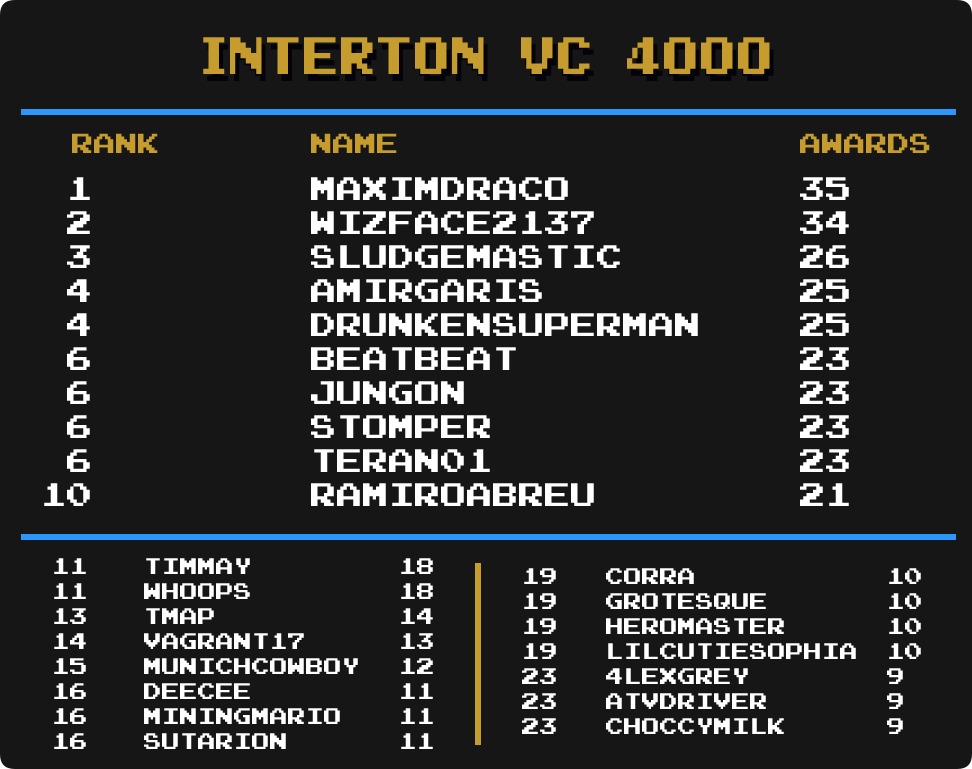

Top Masteries
 By
AmirGaris
By
AmirGaris
Contents
- Intro
- Current Champions
- Notable Milestones
-
Category Rankings
- Total Awards
- Total Awards (Excluding Hacks)
- Event Awards
- Site Awards
- Hack Awards
- Homebrew Awards
- Subset Awards
- Amstrad CPC
- Apple II
- Arcade
- Arcadia 2001
- Arduboy
- Atari 2600
- Atari Jaguar CD
- Dreamcast
- Elektor TV Games Computer
- Fairchild Channel F
- Game Boy
- Game Boy Advance
- Game Boy Color
- Game Gear
- GameCube
- Interton VC 4000
- Master System
- Mega Drive
- Mega Duck
- Nintendo 64
- NES
- Nintendo DS
- Nintendo DSi
- PC Engine
- PC Engine CD
- PC-8000/8800
- PlayStation
- PlayStation 2
- PlayStation Portable
- Pokémon Mini
- Sega Saturn
- Sega CD
- SG-1000
- SNES
- Uzebox
- Virtual Boy
- WASM-4
- Watara Supervision
Intro
We are going to take a look at another metric for greatness, Mastery Awards. Mastery awards are given to users when they complete every achievement for a given set in hardcore mode. Users wear mastery awards as a badge of honor on their profile page representing all the hard work they put into truly becoming a master of the game.
Below we will take a look at which users rank among the best with the most mastery awards in several categories well as notable updates from the previous month to each individual category. Check to see how you rank among the rest of the community members.
Special thanks to  Nydaxn for creating the ranking image templates.
Nydaxn for creating the ranking image templates.
* Data as of May 1st 2025.
Current Champions
 Total Awards
Total Awards 3DO Interactive Multiplayer
3DO Interactive Multiplayer HotCoffee
HotCoffee Amstrad CPC
Amstrad CPC Snapouille
Snapouille Apple II
Apple II Arcade
Arcade Arcadia 2001
Arcadia 2001 Arduboy
Arduboy Atari 2600
Atari 2600 Atari 7800
Atari 7800 Atari Jaguar
Atari Jaguar Atari Jaguar CD
Atari Jaguar CD Atari Lynx
Atari Lynx ColecoVision
ColecoVision Dreamcast
Dreamcast Elektor TV Games Computer
Elektor TV Games Computer 9marlin4
9marlin4 Fairchild Channel F
Fairchild Channel F Game Boy
Game Boy Game Boy Advance
Game Boy Advance Game Boy Color
Game Boy Color Game Gear
Game Gear GameCube
GameCube Intellivision
Intellivision Interton VC 4000
Interton VC 4000 Magnavox Odyssey 2
Magnavox Odyssey 2 Master System
Master System Genesis/Mega Drive
Genesis/Mega Drive Mega Duck
Mega Duck MSX
MSX Nintendo 64
Nintendo 64 Neo Geo CD
Neo Geo CD Neo Geo Pocket
Neo Geo Pocket Maoski
Maoski NES/Famicom
NES/Famicom Nintendo DS
Nintendo DS Nintendo DSi
Nintendo DSi PC Engine/TurboGrafx-16
PC Engine/TurboGrafx-16 PC Engine CD/TurboGrafx-CD
PC Engine CD/TurboGrafx-CD PC-8000/8800
PC-8000/8800 PC-FX
PC-FX PlayStation
PlayStation PlayStation 2
PlayStation 2 PlayStation Portable
PlayStation Portable Pokémon Mini
Pokémon Mini Sega 32X
Sega 32X Nevanos
Nevanos Sega CD
Sega CD SG-1000
SG-1000 SNES/Super Famicom
SNES/Super Famicom Uzebox
Uzebox Vectrex
Vectrex Eeroz
Eeroz Virtual Boy
Virtual Boy WASM-4
WASM-4 Watara Supervision
Watara Supervision WonderSwan
WonderSwanNotable Milestones
1500 Mastery Awards
| AmirGaris |
1300 Mastery Awards
 Lonoke31 Lonoke31 |
 NEOMAR NEOMAR |
1000 Mastery Awards
 ChoccyMilk ChoccyMilk |
900 Mastery Awards
 Timmay Timmay |
800 Mastery Awards
 Nataliie Nataliie |
700 Mastery Awards
 DeeCee DeeCee |
600 Mastery Awards
 Maximdraco Maximdraco |
 mudrik mudrik |
 Olafur Olafur |
500 Mastery Awards
 Botch Botch |
 dericobanjo dericobanjo |
 GreninjaMan GreninjaMan |
 NeoRetroGamer NeoRetroGamer |
400 Mastery Awards
 Speeedman Speeedman |
 HylianRoach HylianRoach |
 PINGG PINGG |
 Valenstein Valenstein |
300 Mastery Awards
 1stPrize 1stPrize |
 Braek Braek |
 cannonwillow cannonwillow |
 DaniloZlatan DaniloZlatan |
 GolfistaVW GolfistaVW |
 KlydeKadell KlydeKadell |
 Sloppydj Sloppydj |
 StingX2 StingX2 |
 UnrealGecko UnrealGecko |
 xClawz xClawz |
 yoshter2011 yoshter2011 |
200 Mastery Awards
 AntonioFNN
AntonioFNN BileDemon
BileDemon benit149
benit149 benjaminmcp0TV
benjaminmcp0TV BlueShellBeast
BlueShellBeast Carca
Carca CMinusMinus
CMinusMinus CrimsonGriffon
CrimsonGriffon Distort8936
Distort8936 DJSergeich
DJSergeich gaaradesert
gaaradesert Shinan
Shinan Kecleon352
Kecleon352 Labuff
Labuff Lasertronic
Lasertronic Metavy
Metavy MUPPY
MUPPY NekroG
NekroG Nepiki
Nepiki orchidcnr
orchidcnr proradii
proradii Relyon
Relyon Remydoodle
Remydoodle scatter
scatter Shmelyoff
Shmelyoff SRamos
SRamos StompFire
StompFire usedpizza
usedpizza TheJuice
TheJuice100 Mastery Awards
 acheaplemon
acheaplemon AlbertAK
AlbertAK Alexaxel
Alexaxel JamesHopkins
JamesHopkins Blatancy
Blatancy Blushfulcorn
Blushfulcorn Capthecat6
Capthecat6 cbrx
cbrx Churrasquito
Churrasquito codechannel
codechannel Cryarionic
Cryarionic DeathPunchKaiju
DeathPunchKaiju drunkatgt
drunkatgt elvisshippuuden01
elvisshippuuden01 EmilyYohane
EmilyYohane eRadicatedZomBiE
eRadicatedZomBiE EulerMoises1981
EulerMoises1981 FishingLynx
FishingLynx Frenchy70
Frenchy70 hawdos
hawdos hibaki
hibaki HotDogStrme
HotDogStrme Ishambard
Ishambard Jabbawocky
Jabbawocky joii00
joii00 jos
jos KazuCrash
KazuCrash kevintheboss420
kevintheboss420 KVNK21
KVNK21 Levenber
Levenber LOSTxSPACE
LOSTxSPACE Massara
Massara mnavarro
mnavarro pierreleheros
pierreleheros PunkMawile
PunkMawile PeteDan
PeteDan Pocrage
Pocrage sandro4912
sandro4912 SBCAT
SBCAT ShabaDaba
ShabaDaba Shadewrecker
Shadewrecker Slothiboy
Slothiboy SpectralOrion
SpectralOrion Spendragon
Spendragon SpongeMan
SpongeMan spoorloos
spoorloos Tabbysas
TabbysasCategory Rankings
Total Awards

-
AmirGaris remains in 1st with 1518 total mastery awards.
-
 Sarconius has moved up 1 spot and is in 7th place.
Sarconius has moved up 1 spot and is in 7th place. -
ChoccyMilk has moved up 2 spots and is in 9th place.
-
 Sutarion has moved up 3 spots and is in 10th place.
Sutarion has moved up 3 spots and is in 10th place. -
 HolyShinx has moved up 3 spots and is in 18th place.
HolyShinx has moved up 3 spots and is in 18th place. -
 Xymjak has made it into the top 25 and is in 25th place.
Xymjak has made it into the top 25 and is in 25th place.
Total Awards (Excluding Hacks)

-
AmirGaris remains in 1st with 1403 total mastery awards.
-
 Whoops has moved up 1 spot and is in 4th place.
Whoops has moved up 1 spot and is in 4th place. -
ChoccyMilk has moved up 3 spots and is in 8th place.
-
 MiningMario has moved up 1 spot and is in 12th place.
MiningMario has moved up 1 spot and is in 12th place. -
Timmay has moved up 1 spot and is in 13th place.
-
 Pixelach has moved up 1 spot and is in 18th place.
Pixelach has moved up 1 spot and is in 18th place. -
Nataliie has moved up 2 spots and is in 20th place.
-
 pitapocket17 has moved up 2 spots and is in 21st place.
pitapocket17 has moved up 2 spots and is in 21st place.
Event Awards

-
 Hotscrock remains in 1st with 49 total mastery awards.
Hotscrock remains in 1st with 49 total mastery awards. -
 Bendyhuman has moved up 1 spot and is in 2nd place.
Bendyhuman has moved up 1 spot and is in 2nd place. -
 Tayadaoc has moved up 1 spot and is in 3rd place.
Tayadaoc has moved up 1 spot and is in 3rd place. -
Sutarion has moved up 1 spot and is in 4th place.
-
Xymjak has moved up 2 spots and is in 5th place.
-
NEOMAR has moved up 1 spot and is tied for 6th place.
-
 s0uth has moved up 1 spot and is in 8th place.
s0uth has moved up 1 spot and is in 8th place. -
AmirGaris has moved up 1 spot and is in 9th place.
-
 amine456 has moved up 11 spot and is in a 4-way tie for 10th place.
amine456 has moved up 11 spot and is in a 4-way tie for 10th place. -
 Pudpod has moved up 4 spots and is in a 4-way tie for 10th place.
Pudpod has moved up 4 spots and is in a 4-way tie for 10th place. -
 Whynot15 has moved up 3 spots and is in a 4-way tie for 10th place.
Whynot15 has moved up 3 spots and is in a 4-way tie for 10th place. -
PINGG has moved up 2 spots and is in 15th place.
-
 Johan has moved up 4 spots and is in 16th place.
Johan has moved up 4 spots and is in 16th place. -
 Agnam has moved up 6 spots and is in 17th place.
Agnam has moved up 6 spots and is in 17th place. -
 msdmario has moved up 4 spots and is in a 3-way tie for 18th place.
msdmario has moved up 4 spots and is in a 3-way tie for 18th place. -
 Prota has made it into the top 25 and is in a 3-way tie for 18th place.
Prota has made it into the top 25 and is in a 3-way tie for 18th place. -
 TheJediSonic has made it into the top 25 and is in a 3-way tie for 18th place.
TheJediSonic has made it into the top 25 and is in a 3-way tie for 18th place. -
 LogicalFallacy has made it into the top 25 and is in 21st place.
LogicalFallacy has made it into the top 25 and is in 21st place. -
 abdalin has made it into the top 25 and is in a 4-way tie for 22nd place.
abdalin has made it into the top 25 and is in a 4-way tie for 22nd place. -
ChoccyMilk has made it into the top 25 and is in a 4-way tie for 22nd place.
-
 Retrokaiser has made it into the top 25 and is in a 4-way tie for 22nd place.
Retrokaiser has made it into the top 25 and is in a 4-way tie for 22nd place. -
 Searo has made it into the top 25 and is in a 4-way tie for 22nd place.
Searo has made it into the top 25 and is in a 4-way tie for 22nd place.
Site Awards

-
 SnowPin remains in 1st with 42 total mastery awards.
SnowPin remains in 1st with 42 total mastery awards. -
 TheMysticalOne has moved up 4 spots and is in 2nd place.
TheMysticalOne has moved up 4 spots and is in 2nd place. -
 suspect15 has moved up 1 spot and is tied for 3rd place.
suspect15 has moved up 1 spot and is tied for 3rd place. -
 SporyTike has moved up 1 spot and is in 13th place.
SporyTike has moved up 1 spot and is in 13th place. -
Hotscrock has moved up 1 spot and is tied for 14th place.
-
 siouxerskate has moved up 1 spot and is in 16th place.
siouxerskate has moved up 1 spot and is in 16th place. -
s0uth has moved up 3 spots and is in a 4-way tie for 21st place.
-
 Brandovsky has made it into the top 25 and is in a 4-way tie for 25th place.
Brandovsky has made it into the top 25 and is in a 4-way tie for 25th place.
Hack Awards

-
HolyShinx remains in 1st with 387 total mastery awards.
-
 multonic has moved up 3 spots and is in 19th place.
multonic has moved up 3 spots and is in 19th place. -
 domenyX has moved up 1 spot and is in a 3-way tie for 23rd place.
domenyX has moved up 1 spot and is in a 3-way tie for 23rd place. -
 metalbubble403 has moved up 1 spot and is in a 3-way tie for 23rd place.
metalbubble403 has moved up 1 spot and is in a 3-way tie for 23rd place.
Homebrew Awards
-
AmirGaris remains in 1st with 401 total mastery awards.
-
ChoccyMilk has moved up 3 spots and is in 5th place.
-
mudrik has moved up 1 spot and is in 11th place.
-
DeeCee has moved up 1 spot and is in 12th place.
-
 atvdriver has moved up 3 spots and is in 15th place.
atvdriver has moved up 3 spots and is in 15th place. -
 pinchanzo has moved up 1 spot and is in 19th place.
pinchanzo has moved up 1 spot and is in 19th place. -
NeoRetroGamer has moved up 2 spots and is in 22nd place.
-
 GregHouse007 has made it into the top 25 and is in 25th place.
GregHouse007 has made it into the top 25 and is in 25th place.
Subset Awards
-
GreninjaMan remains in 1st with 50 total mastery awards.
-
 PunishedXenoriddley has moved up 2 spots and is in 3rd place.
PunishedXenoriddley has moved up 2 spots and is in 3rd place. -
 deewhiz has moved up 1 spot and is tied for 8th place.
deewhiz has moved up 1 spot and is tied for 8th place. -
 Melodius has moved up 3 spots and is in 10th place.
Melodius has moved up 3 spots and is in 10th place. -
 KyoTheCat has moved up 9 spots and is tied for 11th place.
KyoTheCat has moved up 9 spots and is tied for 11th place. -
 NimbusSpark has moved up 1 spot and is tied for 13th place.
NimbusSpark has moved up 1 spot and is tied for 13th place. -
 PrimalGiratina has moved up 2 spots and is tied for 13th place.
PrimalGiratina has moved up 2 spots and is tied for 13th place. -
Johan has moved up 1 spot and is tied for 15th place.
-
 bastard has moved up 7 spots and is in a 5-way tie for 17th place.
bastard has moved up 7 spots and is in a 5-way tie for 17th place. -
 plutopower has moved up 3 spots and is in a 5-way tie for 17th place.
plutopower has moved up 3 spots and is in a 5-way tie for 17th place. -
 Slime95 has made it into the top 25 and is in a 5-way tie for 17th place.
Slime95 has made it into the top 25 and is in a 5-way tie for 17th place. -
 Kinghippo44 has made it into the top 25 and is in a 5-way tie for 22nd place.
Kinghippo44 has made it into the top 25 and is in a 5-way tie for 22nd place. -
 leislonjose has made it into the top 25 and is in a 5-way tie for 22nd place.
leislonjose has made it into the top 25 and is in a 5-way tie for 22nd place.
Amstrad CPC

-
 SilentsongEQ has taken 1st place with 28 total mastery awards.
SilentsongEQ has taken 1st place with 28 total mastery awards. -
 Halbarad has moved up 1 spot and is tied for 10th place.
Halbarad has moved up 1 spot and is tied for 10th place.
Apple II

-
 ThatWhiteBat remains in 1st with 52 total mastery awards.
ThatWhiteBat remains in 1st with 52 total mastery awards. -
 DrunkenSuperman has moved up 1 spot and is in 3rd place.
DrunkenSuperman has moved up 1 spot and is in 3rd place. -
Whoops has moved up 3 spots and is in 7th place.
-
 Desper8 has moved up 8 spots and is tied for 9th place.
Desper8 has moved up 8 spots and is tied for 9th place. -
 teorex has moved up 4 spots and is in 11th place.
teorex has moved up 4 spots and is in 11th place. -
 Mindhral has made it into the top 25 and is tied for 12th place.
Mindhral has made it into the top 25 and is tied for 12th place. -
 RodLima has made it into the top 25 and is tied for 12th place.
RodLima has made it into the top 25 and is tied for 12th place. -
Sutarion has moved up 4 spots and is tied for 17th place.
-
 Teran01 has made it into the top 25 and is tied for 17th place.
Teran01 has made it into the top 25 and is tied for 17th place. -
 lizstar has made it into the top 25 and is in 23rd place.
lizstar has made it into the top 25 and is in 23rd place. -
 dizzykei has made it into the top 25 and is in a 3-way tie for 24th place.
dizzykei has made it into the top 25 and is in a 3-way tie for 24th place. -
 NickCapricorn has made it into the top 25 and is in a 3-way tie for 24th place.
NickCapricorn has made it into the top 25 and is in a 3-way tie for 24th place.
Arcade
-
 LordBBH remains in 1st with 169 total mastery awards.
LordBBH remains in 1st with 169 total mastery awards. -
 jaydee03 has moved up 3 spots and is in 4th place.
jaydee03 has moved up 3 spots and is in 4th place. -
cannonwillow has moved up 3 spots and is in a 4-way tie for 11th place.
-
 dorayaki has moved up 3 spots and is in a 4-way tie for 11th place.
dorayaki has moved up 3 spots and is in a 4-way tie for 11th place. -
 CthulhuThe3rd has moved up 3 spots and is in a 3-way tie for 16th place.
CthulhuThe3rd has moved up 3 spots and is in a 3-way tie for 16th place. -
DaniloZlatan has made it into the top 25 and is in 20th place.
-
 CherryCatVivian has made it into the top 25 and is in a 5-way tie for 21st place.
CherryCatVivian has made it into the top 25 and is in a 5-way tie for 21st place.
Arcadia 2001
-
Maximdraco remains in 1st with 29 total mastery awards.
-
NeoRetroGamer has made it into the top 25 and is in a 5-way tie for 19th place.
Arduboy
-
GregHouse007 has taken 1st place with 76 total mastery awards.
-
Maximdraco has moved up 2 spots and is in 3rd place.
-
HolyShinx has moved up 5 spots and is in a 3-way tie for 10th place.
-
MiningMario has moved up 1 spot and is in 16th place.
-
ChoccyMilk has moved up 1 spot and is in a 3-way tie for 17th place.
-
 ElMullet has made it into the top 25 and is in a 3-way tie for 24th place.
ElMullet has made it into the top 25 and is in a 3-way tie for 24th place.
Atari 2600

-
 PMniac remains in 1st with 126 total mastery awards.
PMniac remains in 1st with 126 total mastery awards. -
ChoccyMilk has moved up 4 spots and is in 16th place.
-
Whoops has made it into the top 25 and is in 25th place.
Atari Jaguar CD

-
 sludgemastic remains in 1st with 9 total mastery awards.
sludgemastic remains in 1st with 9 total mastery awards. -
DeeCee has moved up 2 spots and is in a 3-way tie for 6th place.
-
 hydrocityzone34 has made it into the top 25 and is in a 7-way tie for 9th place.
hydrocityzone34 has made it into the top 25 and is in a 7-way tie for 9th place. -
 Patatosaladz has moved up 8 spots and is in a 7-way tie for 9th place.
Patatosaladz has moved up 8 spots and is in a 7-way tie for 9th place. -
Timmay has moved up 11 spot and is in a 7-way tie for 9th place.
Dreamcast
-
 Yordlebreeder remains in 1st with 67 total mastery awards.
Yordlebreeder remains in 1st with 67 total mastery awards. -
CherryCatVivian has moved up 3 spots and is in a 3-way tie for 3rd place.
-
 DaleRedfield has moved up 2 spots and is tied for 6th place.
DaleRedfield has moved up 2 spots and is tied for 6th place. -
 Pikacshu has moved up 3 spots and is in a 4-way tie for 11th place.
Pikacshu has moved up 3 spots and is in a 4-way tie for 11th place. -
 Poefred has moved up 3 spots and is in a 4-way tie for 18th place.
Poefred has moved up 3 spots and is in a 4-way tie for 18th place.
Elektor TV Games Computer

-
1stPrize has taken 1st place with 26 total mastery awards.
-
atvdriver has made it into the top 25 and is in 22nd place.
Fairchild Channel F

-
Maximdraco remains in 1st with 33 total mastery awards.
-
ChoccyMilk has made it into the top 25 and is in a 4-way tie for 19th place.
Game Boy
-
 Shootzy remains in 1st with 170 total mastery awards.
Shootzy remains in 1st with 170 total mastery awards. -
AmirGaris has moved up 1 spot and is tied for 7th place.
-
 Wubdor has moved up 1 spot and is in 9th place.
Wubdor has moved up 1 spot and is in 9th place. -
 CraneD has moved up 2 spots and is tied for 11th place.
CraneD has moved up 2 spots and is tied for 11th place. -
Sutarion has moved up 4 spots and is in 16th place.
Game Boy Advance
-
 bonecrusher1022 remains in 1st with 219 total mastery awards.
bonecrusher1022 remains in 1st with 219 total mastery awards. -
NEOMAR has moved up 1 spot and is in 7th place.
-
AmirGaris has moved up 2 spots and is in 11th place.
-
ChoccyMilk has moved up 4 spots and is in 15th place.
-
Nataliie has moved up 1 spot and is in 16th place.
-
 LilCutieSophia has moved up 1 spot and is in 20th place.
LilCutieSophia has moved up 1 spot and is in 20th place. -
 KollegaKot has moved up 2 spots and is tied for 21st place.
KollegaKot has moved up 2 spots and is tied for 21st place. -
 Dominick has made it into the top 25 and is in a 3-way tie for 24th place.
Dominick has made it into the top 25 and is in a 3-way tie for 24th place.
Game Boy Color

-
 valeforge remains in 1st with 200 total mastery awards.
valeforge remains in 1st with 200 total mastery awards. -
pinchanzo has moved up 4 spots and is tied for 10th place.
-
MiningMario has moved up 1 spot and is in 15th place.
-
NeoRetroGamer has moved up 2 spots and is tied for 16th place.
-
ChoccyMilk has moved up 5 spots and is in 18th place.
-
Nataliie has moved up 1 spot and is tied for 22nd place.
-
mudrik has made it into the top 25 and is tied for 25th place.
Game Gear
-
Nydaxn remains in 1st with 103 total mastery awards.
-
 TripleDeek has moved up 1 spot and is in 2nd place.
TripleDeek has moved up 1 spot and is in 2nd place. -
Whoops has moved up 4 spots and is in a 3-way tie for 13th place.
-
 The1Ross has made it into the top 25 and is in a 3-way tie for 21st place.
The1Ross has made it into the top 25 and is in a 3-way tie for 21st place. -
 blueorb has made it into the top 25 and is in a 4-way tie for 24th place.
blueorb has made it into the top 25 and is in a 4-way tie for 24th place.
GameCube
-
 grapeisgreat remains in 1st with 30 total mastery awards.
grapeisgreat remains in 1st with 30 total mastery awards. -
bonecrusher1022 has moved up 2 spots and is in a 3-way tie for 7th place.
-
 CassetteCobra has moved up 2 spots and is in a 4-way tie for 12th place.
CassetteCobra has moved up 2 spots and is in a 4-way tie for 12th place. -
 Darkfang114 has moved up 3 spots and is in a 4-way tie for 12th place.
Darkfang114 has moved up 3 spots and is in a 4-way tie for 12th place. -
 Excessiveiser has moved up 3 spots and is in a 5-way tie for 17th place.
Excessiveiser has moved up 3 spots and is in a 5-way tie for 17th place. -
 FemTyler has made it into the top 25 and is in a 7-way tie for 22nd place.
FemTyler has made it into the top 25 and is in a 7-way tie for 22nd place. -
 KayzoBro has made it into the top 25 and is in a 7-way tie for 22nd place.
KayzoBro has made it into the top 25 and is in a 7-way tie for 22nd place.
Interton VC 4000

-
Maximdraco remains in 1st with 35 total mastery awards.
Master System

-
 Jungon remains in 1st with 120 total mastery awards.
Jungon remains in 1st with 120 total mastery awards. -
 gnarblast has made it into the top 25 and is in a 6-way tie for 17th place.
gnarblast has made it into the top 25 and is in a 6-way tie for 17th place. -
NEOMAR has made it into the top 25 and is in a 4-way tie for 23rd place.
Mega Drive

-
Jungon remains in 1st with 126 total mastery awards.
-
Sarconius has moved up 1 spot and is in 9th place.
Mega Duck
-
 AzuchiAkeshi remains in 1st with 20 total mastery awards.
AzuchiAkeshi remains in 1st with 20 total mastery awards. -
Lonoke31 has moved up 2 spots and is tied for 6th place.
-
Dominick has made it into the top 25 and is in a 5-way tie for 10th place.
Nintendo 64

-
 AstroFennec remains in 1st with 85 total mastery awards.
AstroFennec remains in 1st with 85 total mastery awards. -
ChoccyMilk has moved up 1 spot and is in 9th place.
-
Melodius has moved up 1 spot and is in 11th place.
-
Poefred has moved up 3 spots and is in 13th place.
-
 Signum has moved up 4 spots and is tied for 15th place.
Signum has moved up 4 spots and is tied for 15th place. -
 Griffin has made it into the top 25 and is in a 3-way tie for 19th place.
Griffin has made it into the top 25 and is in a 3-way tie for 19th place. -
 Tirbaba has made it into the top 25 and is in a 4-way tie for 22nd place.
Tirbaba has made it into the top 25 and is in a 4-way tie for 22nd place.
NES

-
 mx01 remains in 1st with 322 total mastery awards.
mx01 remains in 1st with 322 total mastery awards. -
Pixelach has moved up 2 spots and is tied for 11th place.
-
gnarblast has moved up 1 spot and is in 16th place.
-
NEOMAR has moved up 1 spot and is tied for 18th place.
-
 Reeve42 has made it into the top 25 and is tied for 23rd place.
Reeve42 has made it into the top 25 and is tied for 23rd place.
Nintendo DS
-
Olafur remains in 1st with 182 total mastery awards.
-
GreninjaMan has moved up 1 spot and is in 15th place.
-
 BeekBeek85 has moved up 3 spots and is in 17th place.
BeekBeek85 has moved up 3 spots and is in 17th place. -
Johan has made it into the top 25 and is in a 3-way tie for 22nd place.
Nintendo DSi
-
MiningMario remains in 1st with 48 total mastery awards.
-
 bocchicookie has moved up 5 spots and is in 6th place.
bocchicookie has moved up 5 spots and is in 6th place. -
 idontwantthis has made it into the top 25 and is in a 8-way tie for 14th place.
idontwantthis has made it into the top 25 and is in a 8-way tie for 14th place. -
 Lugero has made it into the top 25 and is in a 8-way tie for 14th place.
Lugero has made it into the top 25 and is in a 8-way tie for 14th place. -
 BattleBeast has made it into the top 25 and is in a 8-way tie for 14th place.
BattleBeast has made it into the top 25 and is in a 8-way tie for 14th place. -
DeeCee has made it into the top 25 and is in a 8-way tie for 22nd place.
-
Dominick has made it into the top 25 and is in a 8-way tie for 22nd place.
PC Engine
-
 Nanashi remains in 1st with 28 total mastery awards.
Nanashi remains in 1st with 28 total mastery awards. -
 KnockerKrazy has moved up 1 spot and is in 2nd place.
KnockerKrazy has moved up 1 spot and is in 2nd place. -
 FlyssWhizzle has moved up 12 spots and is in 5th place.
FlyssWhizzle has moved up 12 spots and is in 5th place. -
 Aeliana has moved up 9 spots and is tied for 16th place.
Aeliana has moved up 9 spots and is tied for 16th place.
PC Engine CD

-
Nanashi remains in 1st with 22 total mastery awards.
PC-8000/8800

-
Jungon remains in 1st with 32 total mastery awards.
-
DrunkenSuperman has moved up 7 spots and is in a 3-way tie for 13th place.
-
NeoRetroGamer has made it into the top 25 and is in a 3-way tie for 24th place.
PlayStation

-
 FBiDev remains in 1st with 145 total mastery awards.
FBiDev remains in 1st with 145 total mastery awards. -
 Blazekickn has moved up 2 spots and is in 15th place.
Blazekickn has moved up 2 spots and is in 15th place. -
 williamgeesdorf has moved up 1 spot and is tied for 19th place.
williamgeesdorf has moved up 1 spot and is tied for 19th place.
PlayStation 2

-
 Myanjo remains in 1st with 113 total mastery awards.
Myanjo remains in 1st with 113 total mastery awards. -
 Adenothe has moved up 1 spot and is tied for 10th place.
Adenothe has moved up 1 spot and is tied for 10th place. -
Lonoke31 has moved up 12 spots and is in a 3-way tie for 12th place.
-
Blazekickn has moved up 4 spots and is in a 3-way tie for 15th place.
-
 Garchonk has moved up 2 spots and is in a 3-way tie for 15th place.
Garchonk has moved up 2 spots and is in a 3-way tie for 15th place. -
 Imtysy has moved up 1 spot and is tied for 22nd place.
Imtysy has moved up 1 spot and is tied for 22nd place. -
Darkfang114 has made it into the top 25 and is tied for 25th place.
PlayStation Portable
-
Nataliie remains in 1st with 81 total mastery awards.
-
 endearall has moved up 6 spots and is in a 3-way tie for 12th place.
endearall has moved up 6 spots and is in a 3-way tie for 12th place. -
Valenstein has moved up 2 spots and is in a 3-way tie for 12th place.
-
Speeedman has moved up 8 spots and is in a 4-way tie for 15th place.
-
 IantasGames1995 has moved up 2 spots and is in a 4-way tie for 20th place.
IantasGames1995 has moved up 2 spots and is in a 4-way tie for 20th place.
Pokémon Mini

-
ThatWhiteBat remains in 1st with 38 total mastery awards.
Sega Saturn
-
lizstar remains in 1st with 29 total mastery awards.
-
 perdiga has moved up 3 spots and is in a 5-way tie for 8th place.
perdiga has moved up 3 spots and is in a 5-way tie for 8th place. -
NEOMAR has made it into the top 25 and is in a 10-way tie for 16th place.
-
 OldSport has made it into the top 25 and is in a 10-way tie for 16th place.
OldSport has made it into the top 25 and is in a 10-way tie for 16th place.
Sega CD

-
 Drakub remains in 1st with 20 total mastery awards.
Drakub remains in 1st with 20 total mastery awards. -
 CiaoTime has moved up 6 spots and is in a 9-way tie for 12th place.
CiaoTime has moved up 6 spots and is in a 9-way tie for 12th place. -
Sarconius has made it into the top 25 and is in a 9-way tie for 12th place.
-
 BahamutVoid has made it into the top 25 and is in a 13-way tie for 21st place.
BahamutVoid has made it into the top 25 and is in a 13-way tie for 21st place.
SG-1000
-
Jungon remains in 1st with 62 total mastery awards.
-
ChoccyMilk has moved up 5 spots and is tied for 11th place.
-
DrunkenSuperman has moved up 1 spot and is tied for 16th place.
-
cannonwillow has made it into the top 25 and is tied for 25th place.
SNES
-
 danibodom remains in 1st with 292 total mastery awards.
danibodom remains in 1st with 292 total mastery awards. -
metalbubble403 has moved up 1 spot and is in 10th place.
-
KnockerKrazy has moved up 2 spots and is in 19th place.
Uzebox

-
GregHouse007 remains in 1st with 36 total mastery awards.
-
mudrik has moved up 1 spot and is in a 4-way tie for 8th place.
-
MiningMario has moved up 1 spot and is tied for 12th place.
-
Lonoke31 has moved up 4 spots and is in a 3-way tie for 14th place.
Virtual Boy

-
Poefred has taken 1st place with 20 total mastery awards.
-
ChoccyMilk has moved up 8 spots and is in a 9-way tie for 11th place.
WASM-4

-
AmirGaris remains in 1st with 58 total mastery awards.
-
 chengdawei has moved up 3 spots and is in 7th place.
chengdawei has moved up 3 spots and is in 7th place. -
ChoccyMilk has moved up 2 spots and is in a 5-way tie for 15th place.
-
 YoshioFruit has made it into the top 25 and is in a 5-way tie for 15th place.
YoshioFruit has made it into the top 25 and is in a 5-way tie for 15th place. -
pitapocket17 has made it into the top 25 and is in a 3-way tie for 20th place.
Watara Supervision
-
AzuchiAkeshi remains in 1st with 56 total mastery awards.
-
NEOMAR has moved up 1 spot and is in a 3-way tie for 7th place.
-
MiningMario has moved up 3 spots and is tied for 13th place.
-
ChoccyMilk has moved up 1 spot and is tied for 18th place.